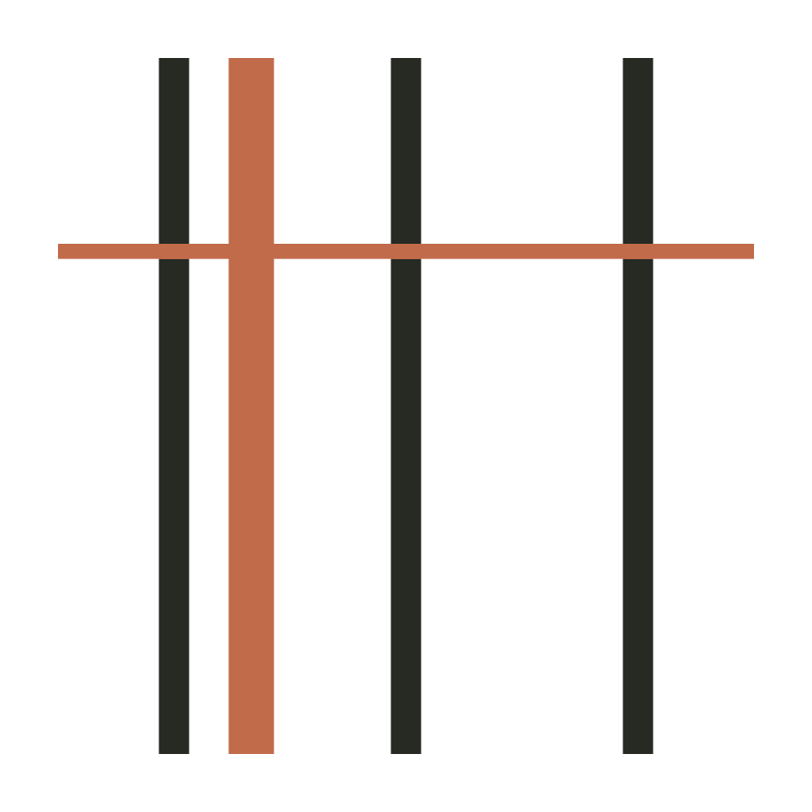
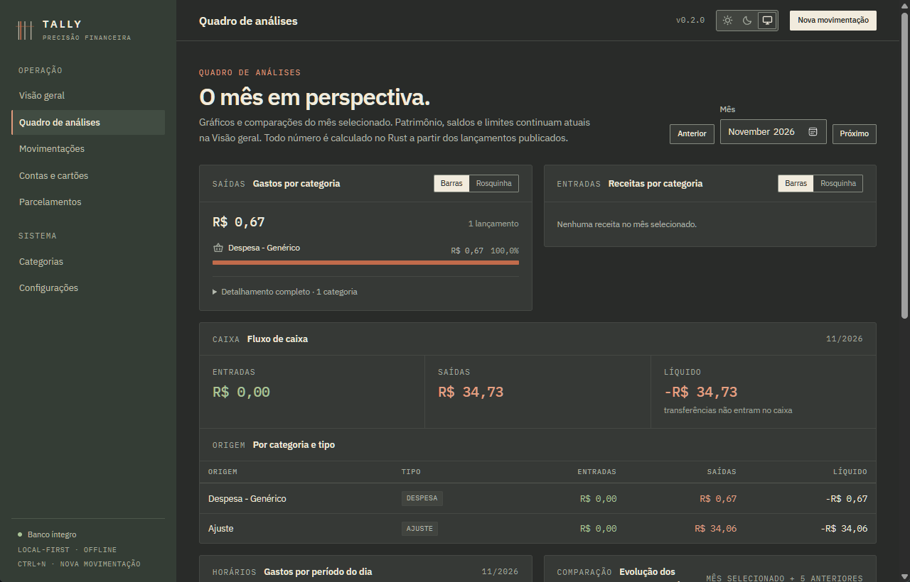

Study 01 / Digital product
Tally
A local-first desktop app for personal finance, designed for a precise reading of net worth, transactions and commitments.
This study documents product and interface decisions drawn from the project history. It does not include user research, usage metrics or financial results. Screenshots will be replaced by versions with fictional data and hidden values. Tally’s interface is in Brazilian Portuguese; captions and alt text in this study are in English.
Context and problem
Serious control without depending on the cloud.
Tally is a desktop personal finance app for Windows. Data lives in a local SQLite database; there is no login, cloud sync, subscription or telemetry. The only network request is the public CDI rate used for savings-pocket yields.
The project starts from a product premise: personal finance requires the same rigour as a bank for cards and installments, with a dense and readable interface. Financial rules live in the Rust core; the interface presents the calculated state and never invents balances.
The visual consequence is a dense but readable application: weighted numbers, aligned tables, explicit states and little decoration without a function.
Context reconstructed from the project README and ROADMAP. No user research or usage metrics.
“A precision instrument for personal finance, local-first and offline.”
Product directionPrinciples and information architecture
An order that separates operation from system.
The v0.2.0 navigation organises the product into two groups. The order is intentional: first what the user operates day to day; then what configures the system.
- Operation
- Overview · Analysis board · Transactions · Accounts & cards · Installments
- System
- Categories · Settings
The Overview answers “where am I now”: net worth, accounts, monthly summary and latest transactions. The Analysis board answers “how is this evolving”: charts, comparisons and time filters, with its own month selector.
Transactions is the ledger; Accounts & cards gathers assets and liabilities; Installments is the full source of commitments and instalments. The split keeps the Overview from accumulating filters and charts that belong to analysis.
Identity and visual language
A visual grammar for numbers and commitments.

Warm paper, ink, olive and terracotta; IBM Plex Sans and IBM Plex Mono; light, dark and system themes.
Product identity, not site identityTally’s identity was built for serious financial software: strong typography, leading numbers, dense tables, rigorous alignment and subtle dividers. The recorded basis is IBM Plex Sans and IBM Plex Mono, warm paper, ink, olive and terracotta, with light, dark and system themes.
The terracotta/oxide family appears in the brand, in actions and also in semantic interface states such as alerts, negatives and highlights. It is not a colour exclusive to the brand or to actions.
The portfolio site keeps its own editorial identity. Tally’s identity appears in the media and the symbol, without bringing the product palette or typography into the site chrome.
- Symbol
- tally.png; light-background version in tally-symbol-mark.png
- Typography
- IBM Plex Sans / IBM Plex Mono
- Palette
- Warm paper, ink, olive and terracotta
- Themes
- Light, dark and system
The interface
Leading numbers, controlled density.
The interface hierarchy puts the numbers that matter at the top and keeps reading dense without hiding context. Currency values use tabular numerals and right alignment; tables use subtle dividers; loading, error and empty states are explicit.
Colour carries semantic meaning: income and expenses have their own colours; transfers remain neutral; terracotta appears in brand, actions and attention states. The result is a financial product interface, not a generic dashboard.



The screenshots are from the application and will be replaced by versions with fictional data and hidden values. The two interaction GIFs remain placeholders.
Dark-theme screenshotsProduct decisions
Decisions that support the interface.
A single entry flow. Expense, income, transfer, card purchase, payment and adjustment all start from the same adaptive form. The type changes fields and validations, not the navigation logic.
An instalment purchase is not a monthly expense. The full purchase amount increases card debt; the expense is recognised instalment by instalment. The internal “Expense to recognise” account keeps net worth correct and avoids double counting.
Overview and Analysis board have distinct roles. The Overview shows the current position, without a global month selector. The board concentrates charts, comparisons and time filters.
Confirmation, backup and reversibility. Destructive actions ask for confirmation with an explicit consequence; the app creates backups before migrations and allows local backup and restore. The frontend does not assume success before the core responds.
Product evolution
Continuous evolution, recorded in the repository.
This study presents Tally in its current state. The decisions, improvements and changes made throughout the project can be followed in the repository history, commit by commit.
The commit history shows the evolution of the code and the interface. The releases bring together the published versions and their respective notes.
Technical dimension
The interface is the tip of a consistent system.
Tally uses Rust for financial rules and persistence, Tauri 2 as the desktop shell, Svelte 5 and TypeScript in the interface, and local SQLite. One mutation is one transaction; reports read only published entries. The interface does not calculate balances on its own.
Distribution is an NSIS installer for Windows 10/11, with offline WebView2. End users do not need to install Node, Rust or SQLite. Data stays on the computer and can be preserved through local backup.
- Stack
- Rust · Tauri 2 · Svelte 5 · TypeScript · SQLite
- Architecture
- Tally.exe → Tauri → Svelte/TypeScript → commands → Rust → SQLite
- Data
- Local SQLite in %LOCALAPPDATA%\Tally\
- Distribution
- NSIS installer / Windows 10/11
- Privacy
- No login, cloud, sync or telemetry. The only network request is the public CDI query.
Project details
Project information.
- Project
- Tally — personal finance
- Type
- Desktop app / digital product
- Year / status
- 2026 / v0.2.0 released
- Role
- Product design, UI and development
- Scope
- Product, information architecture, interface and implementation
- Interface
- Svelte 5 + TypeScript; light, dark and system themes
- Distribution
- Windows installer (NSIS)
- Data
- Local SQLite; no login or cloud
- Product language
- Brazilian Portuguese